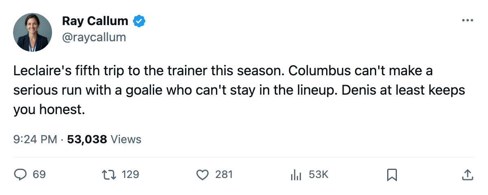
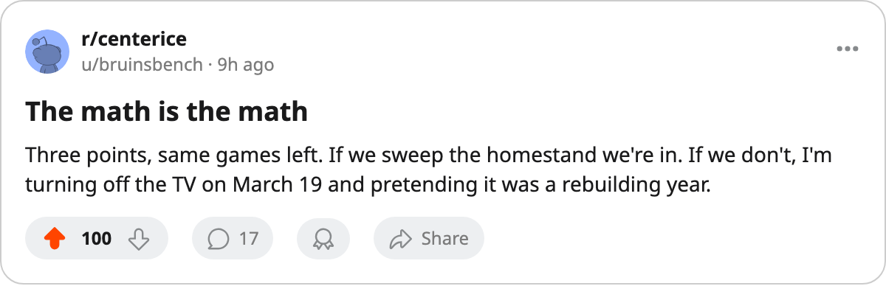

Goalie Watch: Marc Denis takes the crease in Columbus, 3 points behind Phoenix with 15 to play
Pascal Leclaire's fifth injury spell moved Denis to starter. He shut out Calgary on March 8.
 Ray CallumSenior correspondent · Home Ice Network
Ray CallumSenior correspondent · Home Ice Network
 Marc Denis90 started in Columbus' 3-0 shutout of
Marc Denis90 started in Columbus' 3-0 shutout of  Calgary Flames on March 8, the latest in a crease rotation that saw
Calgary Flames on March 8, the latest in a crease rotation that saw  Pascal Leclaire91 in and out five times this season.
Pascal Leclaire91 in and out five times this season.
Leclaire played 42 of  Columbus Blue Jackets's 67 games, 63% of the workload. His fifth injury spell, which landed around March 8, opened the door. Denis, who had 24 starts at 36%, is now the top man.
Columbus Blue Jackets's 67 games, 63% of the workload. His fifth injury spell, which landed around March 8, opened the door. Denis, who had 24 starts at 36%, is now the top man.  Fred Brathwaite77 moved to backup at 3 career games.
Fred Brathwaite77 moved to backup at 3 career games.
The gap
Columbus sits 9th in the Western Conference at 68 points, 3 behind 8th-place  Phoenix Coyotes (71 points). Both have played 67 games. Both have 15 left. Every point from here is worth double.
Phoenix Coyotes (71 points). Both have played 67 games. Both have 15 left. Every point from here is worth double.
| Club | GP | W | L | OTL | PTS | Left | Streak |
|---|---|---|---|---|---|---|---|
| PHX (8th) | 67 | 30 | 28 | 7 | 71 | 15 | L1 |
| CBJ (9th) | 67 | 23 | 30 | 6 | 68 | 15 | W3 |
The Blue Jackets are 3 wins, 5 losses, 2 overtime losses in their last 10. They have scored 21 and allowed 21 in that stretch, finding their way through close ones. The 3-game win streak carries them into Thursday night's date with  Dallas Stars at Nationwide Arena.
Dallas Stars at Nationwide Arena.
The Coyotes host Detroit on March 12, Chicago on March 14, Anaheim on March 15 and Boston on March 18. Columbus draws Dallas at home March 11, Colorado at home March 13, Minnesota at home March 15, then visits Atlanta twice on March 17 and 18.
Denis has been reliable when called on: 24 starts this season, and the March 8 shutout was the kind of night that makes a coach's decision stick. Leclaire's availability is the question that has followed him all year. Five spells, no two spells long. Columbus cannot build a playoff push on a goaltender who cannot stay dressed.
The 3-point gap is not much to climb. Fifteen games is enough. But Columbus needs Denis to be Denis every night, and they need the wins to come against teams like Dallas and Minnesota at home rather than leaking points in the ones that matter.

